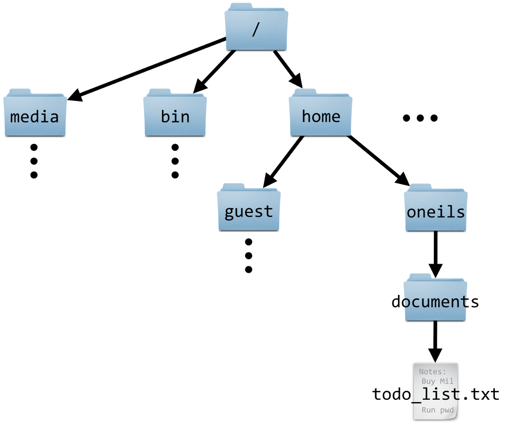
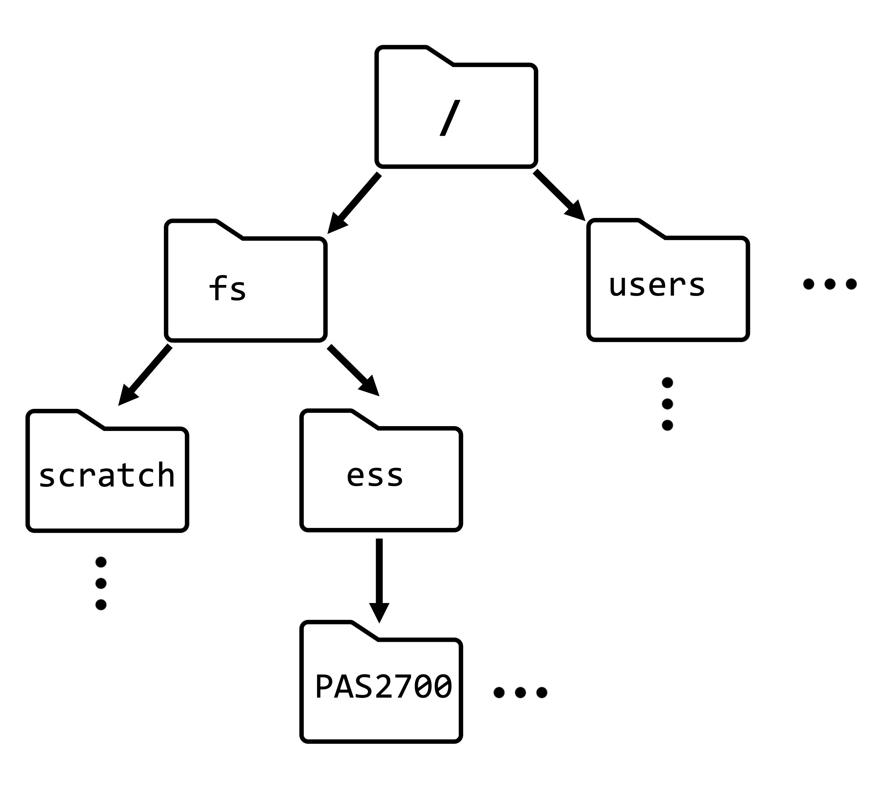

# (Don't run this)
x <- 5
x[1] 5In this session, we’ll cover much of the material from CSB Chapter 1, to learn:
See the “Topic Overview” page on the Unix shell for an overview of Unix shell commands we’ll cover during this course.
We can conceptualize Unix (or “Unix-like” / “*nix”)1 as a family of operating systems, which includes Linux and Mac but not Windows.
Recall from the previous session that OSC runs on Linux — as do the vast majority of “servers” worldwide.
Versus programs with graphical user interfaces:
Versus scripting languages like Python or R:
Clusters and then Pitzer Shell Access.You can’t right-click in this shell, so to copy-and-paste:
Try copying and pasting a random word into your shell. This may just work, you may get a permission pop-up, or it may silently fail — if so, click on the clipboard icon in your browser’s address bar (see red circle in screenshot below):



“Directory” (or “dir” for short) is the term for folder that is commonly used in Unix contexts.
The Unix directory structure is hierarchical, with a single starting point: the root, depicted as /.
A “path” gives the location of a file or directory, in which directories are separated by forward slashes /.
For example, the path to our OSC project’s main/project dir is /fs/ess/PAS2700. This means: the dir PAS2700 is located inside the dir ess, which in turn is located inside the dir fs, which in turn is located in the computer’s root directory.
The OSC dir structure is somewhat different from that of a personal computer. For example, our Home dir is not /home/<username> like in the book, but /users/<some-project>/<username>, as we’ll see below.
Inside your terminal, the “prompt” indicates that the shell is ready for a command. What is shown exactly varies across shells and can also be customized, but our prompts at OSC should show the following information:
<username>@<node-name> <working-dir>]$
For example (and note that ~ means your Home dir):
[jelmer@pitzer-login02 ~]$ We type our commands after the dollar sign, and then press Enter to execute the command. When the command has finished executing, we’ll get our prompt back and can type a new command.
date, whoami, pwdThe Unix shell comes with hundreds of “commands”: small programs that perform specific actions. If you’re familiar with R or Python, a Unix command is like an R/Python function.
Let’s start with a few simple commands:
The date command prints the current date and time:
dateWed Feb 7 09:11:51 EST 2024The whoami (who-am-i) command prints your username:
whoamijelmerThe pwd (Print Working Directory) command prints the path to the directory you are currently located in:
pwd/users/PAS0471/jelmerAll 3 of those commands provided us with some output. That output was printed to screen, which is the default behavior for nearly every Unix command.
cal command — and options & argumentsThe cal command is another example of a command that simply prints some information to the screen, in this case a calendar. We’ll use it to learn about command options and arguments.
Invoking cal without options or arguments will show the current month:
cal February 2024
Su Mo Tu We Th Fr Sa
1 2 3
4 5 6 7 8 9 10
11 12 13 14 15 16 17
18 19 20 21 22 23 24
25 26 27 28 29Use the option -j (dash and then j) for a Julian calendar:
# Make sure to leave a space between `cal` and `-j`!
cal -j February 2024
Sun Mon Tue Wed Thu Fri Sat
32 33 34
35 36 37 38 39 40 41
42 43 44 45 46 47 48
49 50 51 52 53 54 55
56 57 58 59 60Use the -3 option to show 3 months (adding the previous and next month):
cal -3 January 2024 February 2024 March 2024
Su Mo Tu We Th Fr Sa Su Mo Tu We Th Fr Sa Su Mo Tu We Th Fr Sa
1 2 3 4 5 6 1 2 3 1 2
7 8 9 10 11 12 13 4 5 6 7 8 9 10 3 4 5 6 7 8 9
14 15 16 17 18 19 20 11 12 13 14 15 16 17 10 11 12 13 14 15 16
21 22 23 24 25 26 27 18 19 20 21 22 23 24 17 18 19 20 21 22 23
28 29 30 31 25 26 27 28 29 24 25 26 27 28 29 30
31 We can always combine multiple options, for example:
cal -j -3 January 2024 February 2024 March 2024
Sun Mon Tue Wed Thu Fri Sat Sun Mon Tue Wed Thu Fri Sat Sun Mon Tue Wed Thu Fri Sat
1 2 3 4 5 6 32 33 34 61 62
7 8 9 10 11 12 13 35 36 37 38 39 40 41 63 64 65 66 67 68 69
14 15 16 17 18 19 20 42 43 44 45 46 47 48 70 71 72 73 74 75 76
21 22 23 24 25 26 27 49 50 51 52 53 54 55 77 78 79 80 81 82 83
28 29 30 31 56 57 58 59 60 84 85 86 87 88 89 90
91 Handily, options can be “pasted together” like so (output not shown - same as above):
cal -j3As we’ve seen, options are specified with a dash - (or --, as you’ll see later). So far, we’ve only worked with the type of options that are also called “flags”, which change some functionality in an ON/OFF type way:
-j-3.In general terms, options change the behavior of a command.
When we get to commands like cut later in this session, we’ll also see options that take an argument: e.g., the -f option allows you to select a column, where -f 3 will select the 3rd column.
Whereas options change the behavior of a command, arguments typically tell the command what to operate on. Most commonly, these are file or directory paths.
Admittedly, the cal command is not the best illustration of this general pattern — when you give it one argument, this is supposed to be the year it should show a calendar for:
cal 2020 2020
January February March
Su Mo Tu We Th Fr Sa Su Mo Tu We Th Fr Sa Su Mo Tu We Th Fr Sa
1 2 3 4 1 1 2 3 4 5 6 7
5 6 7 8 9 10 11 2 3 4 5 6 7 8 8 9 10 11 12 13 14
12 13 14 15 16 17 18 9 10 11 12 13 14 15 15 16 17 18 19 20 21
19 20 21 22 23 24 25 16 17 18 19 20 21 22 22 23 24 25 26 27 28
26 27 28 29 30 31 23 24 25 26 27 28 29 29 30 31
# [...output truncated, entire year is shown...]We can also combine options and arguments:
cal -j 2020 2020
January February
Sun Mon Tue Wed Thu Fri Sat Sun Mon Tue Wed Thu Fri Sat
1 2 3 4 32
5 6 7 8 9 10 11 33 34 35 36 37 38 39
12 13 14 15 16 17 18 40 41 42 43 44 45 46
19 20 21 22 23 24 25 47 48 49 50 51 52 53
26 27 28 29 30 31 54 55 56 57 58 59 60
# [...output truncated, entire year is shown...]Syntax-wise, arguments:
- (or --)Many commands – and other command-line programs! – have a -h option for help, which usually gives a concise summary of the command’s syntax, i.e. it’s available options and arguments:
cal -h
Usage:
cal [options] [[[day] month] year]
Options:
-1, --one show only current month (default)
-3, --three show previous, current and next month
-s, --sunday Sunday as first day of week
-m, --monday Monday as first day of week
-j, --julian output Julian dates
-y, --year show whole current year
-V, --version display version information and exit
-h, --help display this help text and exitman command (Click to expand)
An alternative way of getting help for Unix commands is with the man command:
man calThis manual page often includes a lot more details than the --help output, and it is opened inside a “pager” rather than printed to screen: type q to exit the pager that man launches.
cd and command “actions”All the commands so far “merely” provided some information, which was printed to screen.
But many commands perform another kind of action. For example, the command cd will change your working directory. And like many commands that perform a potentially invisible action, cd normally has no output at all.
First, let’s check again where we are — in our Home directory:
# (Note: you will have a different project listed in your Home dir. This is not important.)
pwd/users/PAS0471/jelmerNow, let’s use cd to move to another directory by specifying the path to that directory as an argument:
cd /fs/ess/PAS2700pwd/fs/ess/PAS2700So:
Like cal, cd accepts an argument. Unlike cal, this argument takes the form of a path that the command should operate on, which is much more typical.
cd gives no output when it successfully changed the working directory. This is very common behavior for Unix commands that perform operations: when they succeed, they are silent.
Let’s also see what happens when cd does not succeed — it gives an error:
cd /fs/ess/PAs2700-bash: cd: /fs/ess/PAs2700: No such file or directoryWe used a lowercase S in /PAs2700/ — this should have been /PAS2700/. Everything, including paths, is case-sensitive in the Unix shell!
# is considered a comment instead of code!# This entire line is a comment - you can run it and nothing will happen
pwd # 'pwd' will be executed but everything after the '#' is ignored/users/PAS0471/jelmerUsing keyboard shortcuts help you to work much more efficiently in the shell. And some are invaluable:
Up / Down arrow keys to cycle through command history.Type /f and press Tab (will autocomplete to /fs/)
Add e (/fs/e) and press Tab (will autocomplete to /fs/ess/).
Add PAS (/fs/ess/PAS) and press Tab. Nothing should happen: there are multiple (many!) options.
Press Tab Tab (i.e., twice in quick succession) and it should say:
Display all 503 possibilities? (y or n)Type n to answer no: we don’t need to see all the dirs starting with PAS.
Add 27 (/fs/ess/PAS27) and press Tab (should autocomplete to /fs/ess/PAS2700).
Complete it to /fs/ess/PAS2700 and Enter. What does the error mean?
bash: /fs/ess/PAS2700/: Is a directoryPress ⇧ to get the previous “command” back on the prompt.
Press Ctrl+A to move to the beginning of the line.
Add cd and a space in front of the dir and press Enter again.
cd /fs/ess/PAS2700To simulate a long-running command that we may want to abort, we can use the sleep command, which will make the computer wait for a specified amount of time until giving your prompt back. Run the below command and instead of waiting for the full 60 seconds, press Ctrl + C to get your prompt back sooner!
sleep 60sOr, use Ctrl + C after running this example of an incomplete command (an opening parenthesis ():
(Note that even on Macs, you should use Ctrl instead of switching them out for Cmd as you may be used to doing (in some cases, like copy/paste, both work).
| Shortcut | Function |
|---|---|
| Tab | Tab completion |
| ⇧ / ⇩ | Cycle through previously issued commands |
| Ctrl(+Shift)+C | Copy selected text |
| Ctrl(+Shift)+V | Paste text from clipboard |
| Ctrl+A / Ctrl+E | Go to beginning/end of line |
| Ctrl+U /Ctrl+K | Cut from cursor to beginning / end of line |
| Ctrl+W | |
| Ctrl+Y | Paste (“yank”) text that was cut with one of the shortcuts above |
| Alt+. / Esc+. | Retrieve last argument of previous command (very useful!) (Esc+. for Mac) |
| Ctrl+R | Search history: press Ctrl+R again to cycle through matches, Enter to put command in prompt. |
| Ctrl+C | Cancel (kill/stop/abort) currently active command |
| Ctrl+D | Exit (a program or the shell, depending on the context) (same as exit command) |
| Ctrl+L | Clear the screen (same as clear command) |
You may be familiar with the concept of variables from previous experience with perhaps R or another language. Variables can hold values and other pieces of data and are essential in programming.
# (Don't run this)
x <- 5
x[1] 5x=5
echo $x5= in x=5.$ prefix to reference (but not to assign) variables in the shell4.echo command, a general command to print text, to print the value of $x (cf. in R).By the way, echo can also print literal text (as shown below) or combinations of literals and variables (next exercise):
echo "Welcome to PLNTPTH 6193"Welcome to PLNTPTH 6193Environment variables are pre-existing variables that have been automatically assigned values. Two examples:
# $HOME contains the path to your Home dir:
echo $HOME/users/PAS0471/jelmer# $USER contains your user name:
echo $USERjelmerUsing an environment variable, print “Hello, my name is <your username>” (e.g. “Hello, my name is natalie”).
# (This would also work without the " " quotes)
echo "Hello, my name is $USER"Hello, my name is jelmerOur base OSC directory for the course is the /fs/ess/PAS2700 we are currently in. Now, let’s all create our own subdir in here, and get the data from the CSB book.
Create a directory for yourself using the mkdir (make dir) command:
mkdir users/$USERMove there using cd:
cd users/$USERGet the files associated with the CSB book by “cloning” (downloading) its Git repository:
git clone https://github.com/CSB-book/CSB.gitMove into the sandbox dir for the Unix chapter (remember to use tab completion):
cd CSB/unix/sandboxTechnically, the latter terms are more correct, as Unix formally does refer to a specific operating system.↩︎
Command-line Interface (CLI), as opposed to Graphical User Interface (GUI)↩︎
Though some commands are flexible and accept either order.↩︎
Because of this, anytime you see a word/string that starts with a $ in the shell, you can safely assume that it is a variable.↩︎